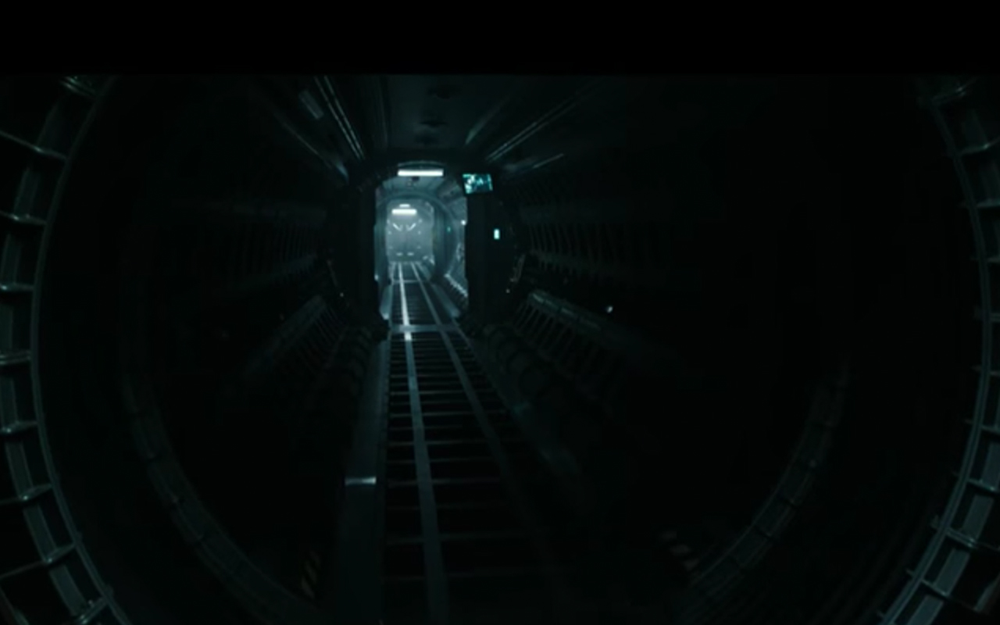
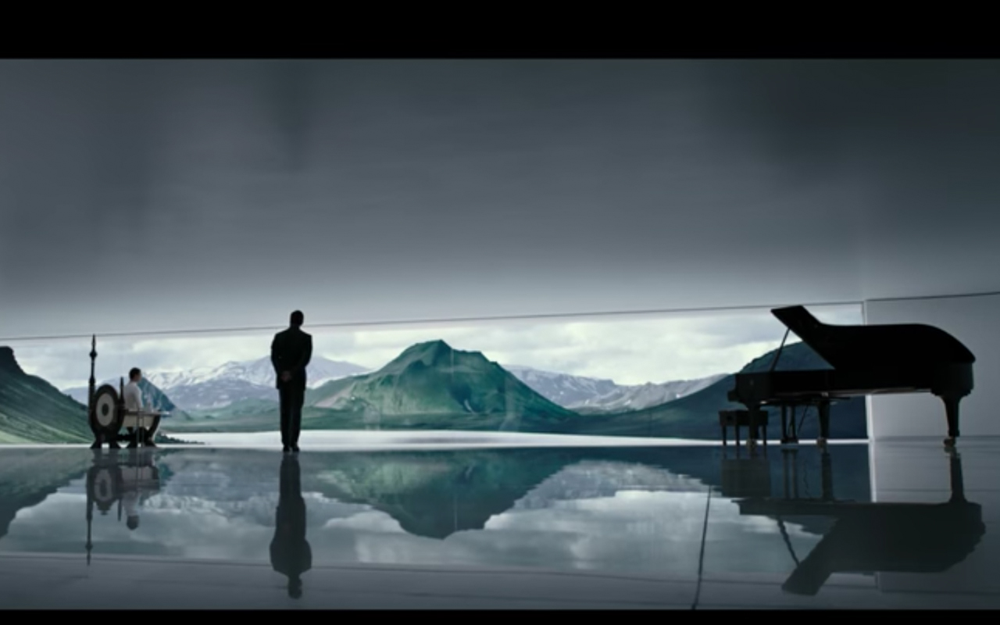
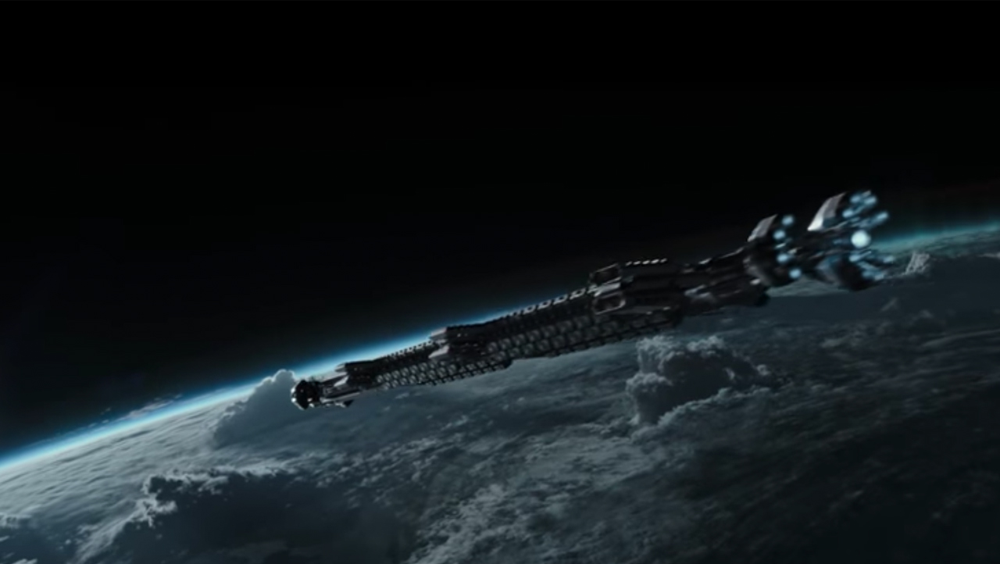
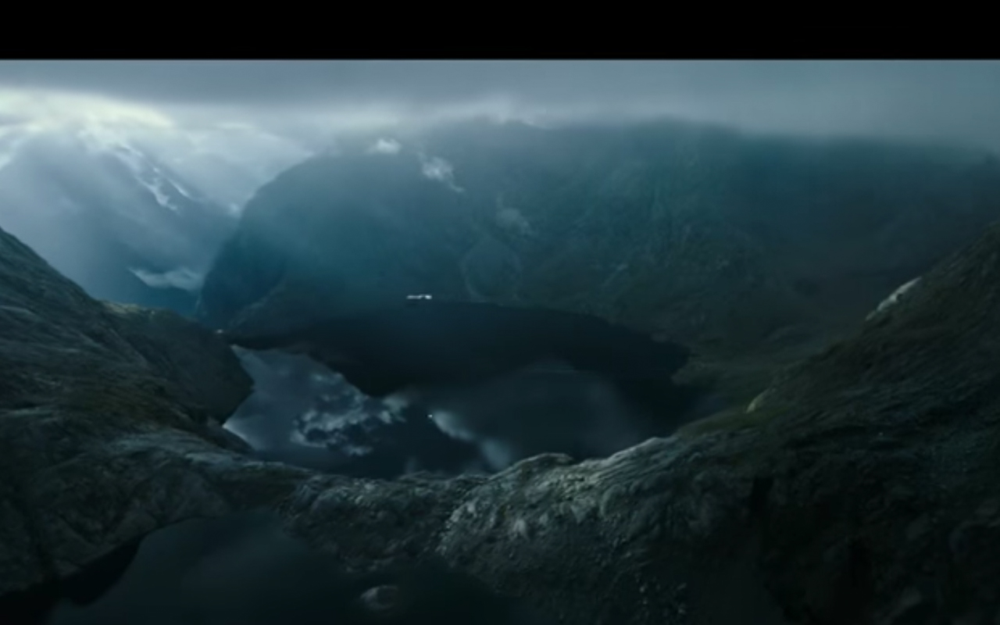
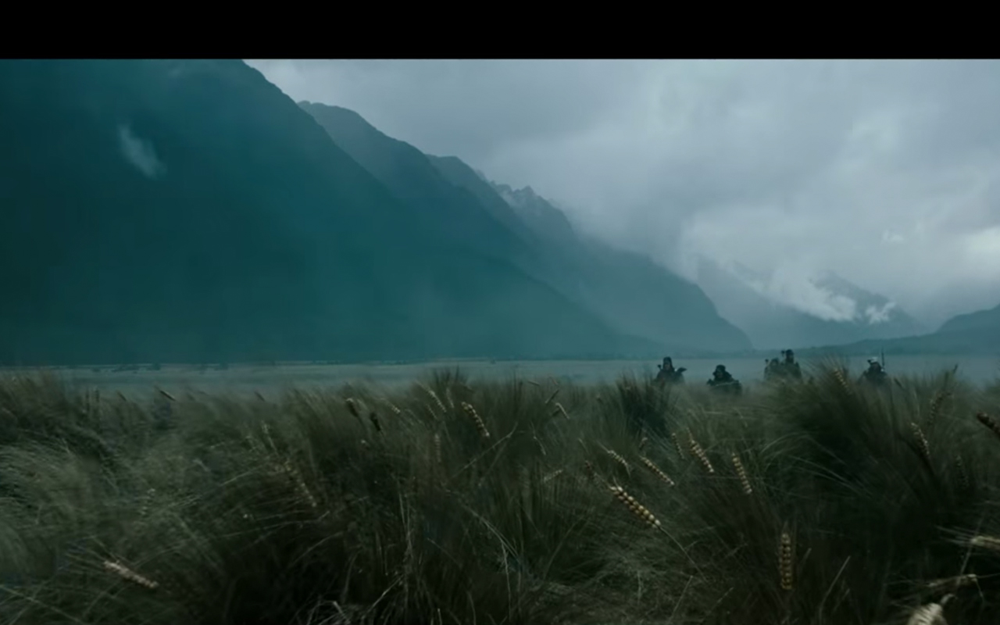
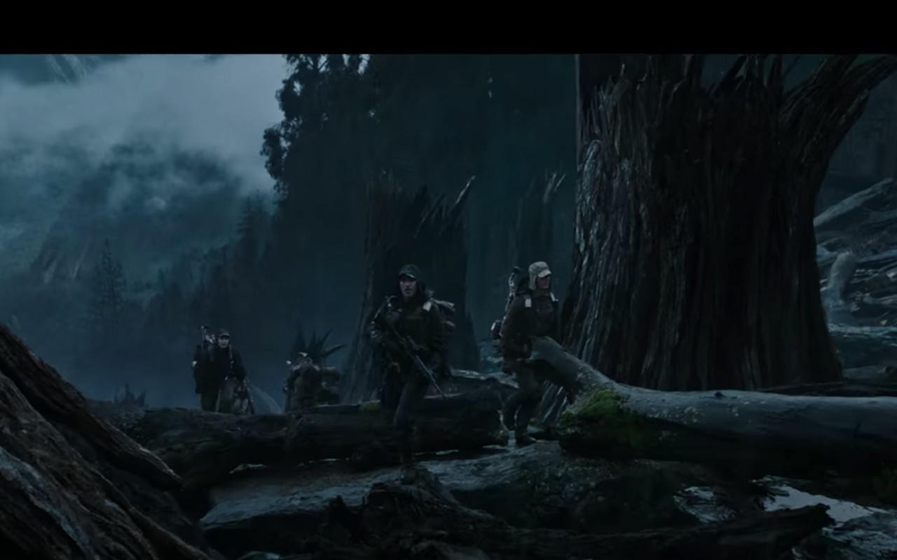

Когда Ридли Скотт задумал снять ужастик, ни одна компания не согласилась на сотрудничество. Сюжет был настолько кровавым и жутким, что такой фильм нельзя было смотреть. «20th Century Fox» взялись за проект только после того, как режиссер согласился значительно сократить количество леденящих кровь сцен. И даже после этого создателям фильма пришлось полностью перемонтировать фильм, поскольку он все равно получился очень страшным.
Название компании — «Вэйланд Ютани» (Weyland Yutani) — было составлено из имен бывших соседей Ридли Скотта, которых он очень не любил.

Некоторые звуковые эффекты были созданы с помощью сделанного в Австралии цифрового сэмплера «Fairlight». Сейчас этот 8-битовый синтезатор выглядит смехотворным, но в то время он стоил 30 тысяч долларов, и его использовали на концертах.
После выхода фильма компания Caterpillar (CAT), которая занимается производством силового оборудования, получила несколько запросов от людей, заинтересованных в приобретении шагающего погрузчика-экзоскелета CAT, с помощью которого Элен Рипли борется с самкой чужого в финальной сцене фильма. Компании Caterpillar пришлось неоднократно объяснять, что это оборудование существует только в фантастическом фильме.

Декорация гнезда чужих была сохранена после завершения съёмок. Впоследствии она была использована в «Бэтмене» (1989) в сцене на заводе «Axis Chemicals».
- В базовой концепции художника Ганса Рудольфа Гигера у Чужого есть глаза. Автор настоял, чтобы в фильме у существа не было глаз, чтобы подчеркнуть образ холодного и расчетливого убийцы.
- Сигурни Уивер попросила Джеймса Кэмерона, чтобы её героиня в фильме сделала три вещи: не носила оружия, умерла и занималась сексом с чужим.

В первом варианте сценария офицер Рипли – мужчина
- По замыслу Ридли Скотта, в конце фильма Рипли должны были откусить голову. Но представители кинокомпании категорически настаивали на более оптимистическом финале.
- Кастинги на роль Рипли в конечном счете свелись к Сигурни Уивер и Мерил Стрип. Актрисы вместе учились на одном курсе в Йельском университете.

Изначально фильм хотели назвать «Звездное чудовище».
- Слизь, которая выступает у Чужого, была сделана при помощи лубриканта К-У, который очень популярен в Америке.
В настоящее время одно из яиц фэйсхаггера находится в «Смитсоновском институте» в Вашингтоне.

Большинство декораций, которые использовались на корабле «Ностромо» были взяты с реальных самолетов, которые отслужили свое и были отправлены на кладбище самолетов.
- Мертвую личинку, которую препарирует Эш, сделали из свежих моллюсков, четырех устриц и почки овцы, чтобы «воссоздать» внутренние органы существа.